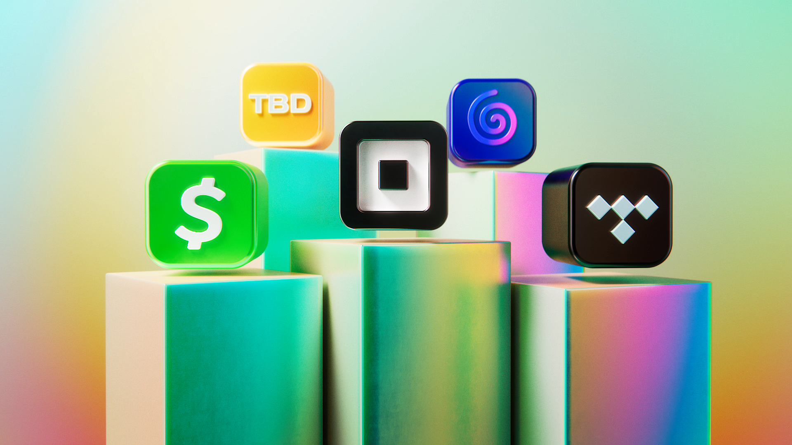

Press assets
Download Block’s latest press assets. The animated logo is our primary logo — please use the provided MP4 or GIF whenever possible.
Last updated 12.7.21

You may use these Block logos and assets only for editorial news distribution. By downloading these assets, you agree to use the animated logo instead of the static logo whenever possible. For non-editorial uses, please request permission at press@block.xyz.